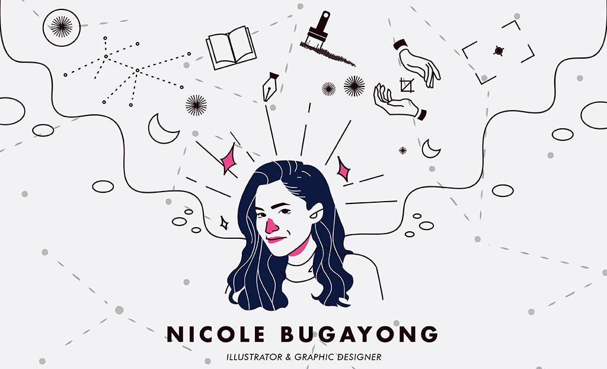
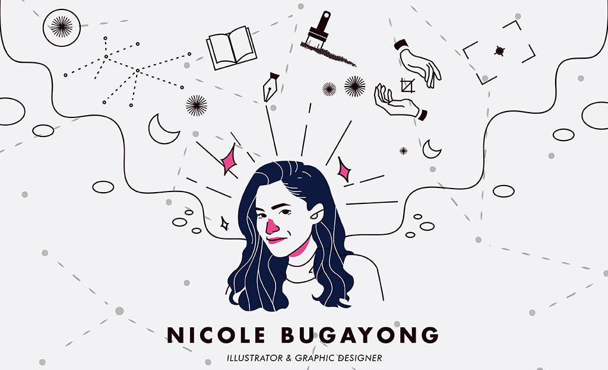

TUGON WEEKENDERS BAZAAR
The Weekenderʼs Bazaar was meant to have a retro
outdoors feel. Tasked with portraying this story, I
illustrated characters in traditional Retro get-up,
enjoying the day. The style aligned with the vocation
of TUGON which is directed towards helping chil-
dren and fighting child abuse.
DREAM CLOSET
Done with natural brushes on ADOBE PHO-
TOSHOP, DREAM CLOSET was a personal
project - a way to distress. As a student
dormer, I usually find myself tight on money
- or at the least I donʼt have enough to fuel
my ambitious closet dreams. In substitution
for this strong desire, I would draw the
outfits I desired and keep it with me as a
motivation driver in every commission work I
did. It was a unique style; keeping to
abstract humane forms, while still depicting
me.
SUBARASHII RAMEN MAKEOVER
Now identifying themselves as a Japanese comfort food stall, SUBARASHII was a
student-run food stall under the JSEC student experience. As a student myself, I
became an understanding partner for the owners and was ultimately trusted to
remake their logos, focusing on the king of Japanese comforting food: RAMEN.
 
